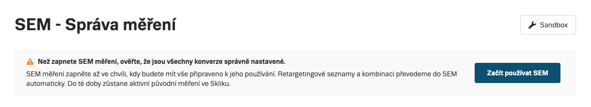

Nasazení a přechod na SEM
Průvodce platí jak pro nové inzerenty, tak pro ty, kteří přecházejí ze stávajících Sklik skriptů. Po celou dobu nasazení běží stará i nová měření souběžně – bez výpadku dat.
Zvolte metodu implementace
Všechny čtyři metody jsou rovnocenné z pohledu nasbíraných dat – liší se pouze způsobem nasazení.
| Metoda | Kdo ji použije | Přístup ke kódu webu | Technická náročnost |
|---|---|---|---|
| Přímý skript | Vývojář s přístupem do HTML šablon | Vyžadován | Střední – nutné přidat kód na každou stránku |
| Google Tag Manager | Marketér nebo vývojář s GTM | Není potřeba (jen GTM) | Nízká – šablona v GTM galerii, bez kódování |
| Doplňky pro platformy | Provozovatel e-shopu na platformě s SEM doplňkem | Není potřeba (doplněk platformy) | Velmi nízká – stačí zadat SEM ID |
| Server-to-Server (S2S) | Vývojář s vlastním backendem | Vyžadován (BE + FE) | Vysoká – HTTP volání z vašeho serveru |
Postup nasazení
-
Nasazení nových kódů
Nasaďte SEM napřímo, pomocí připravené GTM šablony nebo ho aktivujte ve vaší webové platformě.
- Přímý skript – vložení kódu přímo do HTML stránky
- Google Tag Manager – přes GTM šablonu nebo vlastní HTML tagy
- Doplněk e-commerce platformy
- Server-to-Server (S2S) – pokročilé měření z backendu
E-shopy napojené na Zboží.czPro všechny události na webu používejte kombinované SEM ID provozovny. Díky tomu správně přiřadíte nákupní konverze ke kampani Seznam Nákupy.
-
Migrace konverzí na SEM v účtu Pouze při přechodu
Aby se vám aktivní konverze i nadále správně měřily, nastavte u nich ve Správě měření správný typ. Více ve Správě konverzí.
-
Vytvoření nových konverzních SEM událostí
Další akce uživatelů na vašem webu, které budete chtít v Skliku sledovat, si můžete nastavit předem v Správě měření.
-
Test SEMu v sandboxu
Nezávazně si ověřte, že všechny události posíláte správně, abyste nepřišli o žádná data. Viz Testování (Sandbox).
-
Zapnutí SEMu
Ve Správě měření aktivujte Začít používat SEM. Od této chvíle pro měření konverzí a zařazení publik do retargetingu (RTG) využíváte výhradně události SEM. Rozhraní Skliku vás procesem provede a upozorní na případné nedokončené kroky.
Přepnutí nelze vrátit zpětPo potvrzení přechodu se staré měřicí kódy přestanou zpracovávat. Ujistěte se, že máte nastavené SEM konverze a ověřená data v Sandboxu.

-
Vytvoření nových RTG událostí
Z pokročilých údajů, které posíláte pomocí SEM, si můžete vytvořit více retargetingových publik.
-
Závěrečný úklid webu Pouze při přechodu
Z webu odstraňte staré retargetingové a konverzní skripty, které už nebudete potřebovat. Jejich ponechání nezpůsobí chybu, ale zbytečně zatěžuje stránku.